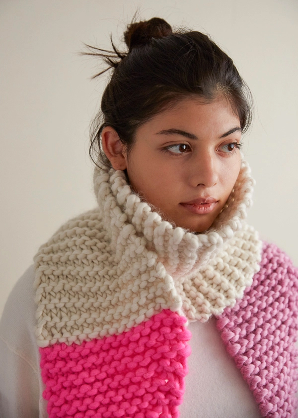

Knitting
 Knitting is a method for production of textile fabrics by interlacing yarn loops with loops of the same or other yarns. It is used to create many types of garments. Knitting may be done by hand or by machine.
Knitting creates stitches: loops of yarn in a row, either flat or in the round (tubular). There are usually many active stitches on the knitting needle at one time. Knitted fabric consists of a number of consecutive rows of connected loops that intermesh with the next and previous rows. As each row is formed, each newly created loop is pulled through one or more loops from the prior row and placed on the gaining needle so that the loops from the prior row can be pulled off the other needle without unraveling.
Differences in yarn (varying in fibre type, weight, uniformity and twist), needle size, and stitch type allow for a variety of knitted fabrics with different properties, including color, texture, thickness, heat retention, water resistance, and integrity.[1] A small sample of knitwork is known as a swatch.